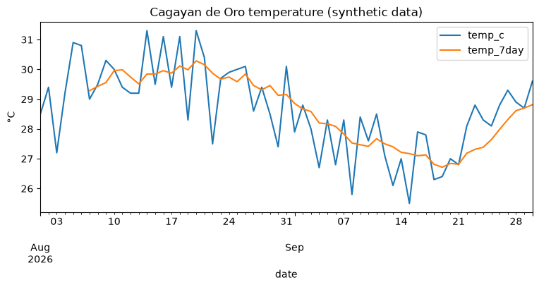
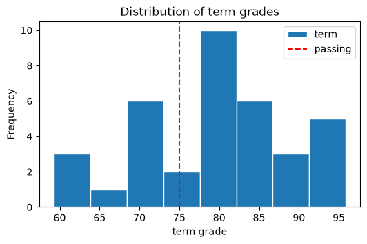
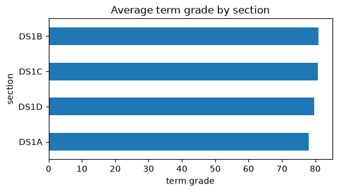
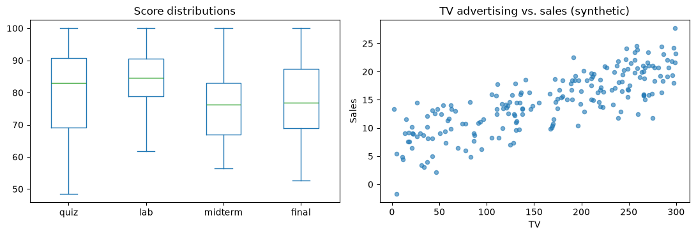

Computational Tools and Visualization#
DS112 — Computer Programming
Week 14: · Suggested class time: 5 hours (2-hour lecture + 3-hour laboratory)
ILO : Perform computational and visualization tasks using pandas.
Once data is loaded and cleaned, we compute new information from it and visualize it to see patterns. pandas includes computational tools — derived columns, binning, ranking, correlation, rolling windows — and plotting methods built on Matplotlib.
import numpy as np
import pandas as pd
pd.set_option("display.max_columns", 20)
pd.set_option("display.width", 120)
import matplotlib.pyplot as plt
grades = pd.read_csv("data/grades.csv", index_col="student_id")
weather = pd.read_csv("data/weather.csv", parse_dates=["date"])
ads = pd.read_csv("data/advertising_synthetic.csv")
Derived Columns#
grades = grades.fillna({"lab": grades["lab"].mean(), "midterm": grades["midterm"].mean()})
weights = {"quiz": 0.2, "lab": 0.3, "midterm": 0.2, "final": 0.3}
grades["term"] = sum(grades[col] * w for col, w in weights.items()).round(2)
grades["remark"] = np.where(grades["term"] >= 75, "Passed", "Failed")
grades[["name", "term", "remark"]].head()
| name | term | remark | |
|---|---|---|---|
| student_id | |||
| 2026-0001 | Ana | 62.69 | Failed |
| 2026-0002 | Ben | 83.33 | Passed |
| 2026-0003 | Carlo | 92.96 | Passed |
| 2026-0004 | Diana | 87.03 | Passed |
| 2026-0005 | Ella | 92.95 | Passed |
map and apply#
Series.map(function_or_dict)transforms each value.DataFrame.apply(function, axis=1)runs a function on each row.
Prefer vectorized operations when possible — they are much faster — and use apply for logic that is hard to vectorize.
def letter(score):
if score >= 90:
return "A"
if score >= 80:
return "B"
if score >= 75:
return "C"
return "F"
grades["letter"] = grades["term"].map(letter)
grades["best"] = grades[["quiz", "lab", "midterm", "final"]].apply(lambda row: row.idxmax(), axis=1)
grades[["name", "term", "letter", "best"]].head()
| name | term | letter | best | |
|---|---|---|---|---|
| student_id | ||||
| 2026-0001 | Ana | 62.69 | F | lab |
| 2026-0002 | Ben | 83.33 | B | quiz |
| 2026-0003 | Carlo | 92.96 | A | lab |
| 2026-0004 | Diana | 87.03 | B | final |
| 2026-0005 | Ella | 92.95 | A | lab |
Binning with cut#
grades["band"] = pd.cut(grades["term"], bins=[0, 75, 85, 100], labels=["below 75", "75–85", "85+"], right=False)
grades["band"].value_counts().sort_index()
band
below 75 11
75–85 14
85+ 11
Name: count, dtype: int64
Statistical Tools#
scores = grades[["quiz", "lab", "midterm", "final"]]
print(scores.corr().round(2)) # correlation between assessments
print(grades["term"].rank(ascending=False).head()) # 1 = highest
quiz lab midterm final
quiz 1.00 0.79 0.59 0.63
lab 0.79 1.00 0.65 0.60
midterm 0.59 0.65 1.00 0.33
final 0.63 0.60 0.33 1.00
student_id
2026-0001 34.0
2026-0002 13.0
2026-0003 3.0
2026-0004 8.0
2026-0005 4.0
Name: term, dtype: float64
Time-based tools: cumulative and rolling#
cdo = weather[weather["station"] == "Cagayan de Oro"].set_index("date")
cdo = cdo.assign(
rain_cumulative=cdo["rain_mm"].cumsum(),
temp_7day=cdo["temp_c"].rolling(7).mean(), # 7-day moving average
temp_change=cdo["temp_c"].diff(), # change from the previous day
)
cdo[["temp_c", "temp_7day", "temp_change", "rain_mm", "rain_cumulative"]].iloc[5:10].round(2)
| temp_c | temp_7day | temp_change | rain_mm | rain_cumulative | |
|---|---|---|---|---|---|
| date | |||||
| 2026-08-06 | 30.8 | NaN | -0.1 | 5.3 | 34.8 |
| 2026-08-07 | 29.0 | 29.29 | -1.8 | 0.0 | 34.8 |
| 2026-08-08 | 29.5 | 29.43 | 0.5 | 0.0 | 34.8 |
| 2026-08-09 | 30.3 | 29.56 | 0.8 | 0.0 | 34.8 |
| 2026-08-10 | 30.0 | 29.96 | -0.3 | 0.0 | 34.8 |
Visualization#
Every Series and DataFrame has a .plot() method. The kind argument chooses the chart:
Chart |
Use for |
Code |
|---|---|---|
line |
trends over time |
|
bar / barh |
comparing categories |
|
hist |
distribution of one variable |
|
box |
distribution + outliers by group |
|
scatter |
relationship between two variables |
|
Line chart — trends over time#
ax = cdo[["temp_c", "temp_7day"]].plot(figsize=(9, 3.5), title="Cagayan de Oro temperature (synthetic data)")
ax.set_xlabel("date")
ax.set_ylabel("°C")
plt.show()

Histogram — distribution#
ax = grades["term"].plot(kind="hist", bins=8, edgecolor="white", figsize=(6, 3.5), title="Distribution of term grades")
ax.axvline(75, color="red", linestyle="--", label="passing")
ax.set_xlabel("term grade")
ax.legend()
plt.show()

Bar chart — comparing categories#
section_means = grades.groupby("section")["term"].mean().sort_values()
ax = section_means.plot(kind="barh", figsize=(6, 3), title="Average term grade by section")
ax.set_xlabel("term grade")
plt.show()

Box plot and scatter plot#
fig, axes = plt.subplots(1, 2, figsize=(11, 3.8))
scores.plot(kind="box", ax=axes[0], title="Score distributions")
ads.plot(kind="scatter", x="TV", y="Sales", alpha=0.6, ax=axes[1], title="TV advertising vs. sales (synthetic)")
plt.tight_layout()
plt.show()

Good charts#
Give every chart a title and labeled axes with units.
Choose the chart that matches the question (trend → line, comparison → bar, distribution → histogram/box, relationship → scatter).
Start bar charts at zero.
State when data is synthetic or incomplete.
Summary#
Task |
Code |
|---|---|
derived columns |
arithmetic on columns, |
transform values / rows |
|
binning |
|
statistics |
|
plotting |
|
References#
Hunter, J. D. (2007). Matplotlib: A 2D graphics environment. Computing in Science & Engineering, 9(3), 90–95. https://doi.org/10.1109/MCSE.2007.55
Maulion, M. R. (2022). DS 112 computer programming [Instructional material]. University of Science and Technology of Southern Philippines.
McKinney, W. (2022). Python for data analysis: Data wrangling with pandas, NumPy, and Jupyter (3rd ed.). O’Reilly Media. https://wesmckinney.com/book/
The pandas development team. (2026). Chart visualization. https://pandas.pydata.org/docs/user_guide/visualization.html
The pandas development team. (2026). pandas documentation. https://pandas.pydata.org/docs/
VanderPlas, J. (2023). Python data science handbook: Essential tools for working with data (2nd ed.). O’Reilly Media. https://jakevdp.github.io/PythonDataScienceHandbook/